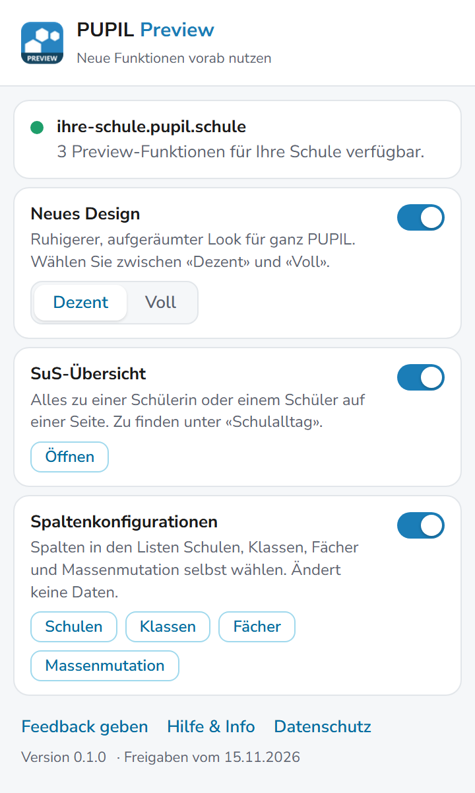

Neue PUPIL-Funktionen vorab nutzen.
Mit PUPIL Preview probieren Schulen ausgewählte Neuerungen aus, bevor sie fest in PUPIL einziehen. Ihre Rückmeldungen fliessen direkt in die Weiterentwicklung ein.

PUPIL Preview
Nur lesende Funktionen · ändert keine DatenWas PUPIL Preview bietet
Neues Design
Ein ruhigerer, aufgeräumter Look für ganz PUPIL, wahlweise «Dezent» oder «Voll». Jederzeit aus- und einschaltbar.
SuS-Übersicht
Alles Wichtige zu einer Schülerin oder einem Schüler auf einer Seite, direkt unter «Schulalltag».
Dokument-Vorschau im Personendossier
PDF, Word, Excel, PowerPoint und Bilder direkt ansehen, ohne sie herunterzuladen.
Berechtigungsübersicht
Wer darf was? Rollen, Berechtigungen und Dossier-Zugriffe auf einen Blick.
Spaltenkonfigurationen
In den Listen Schulen, Klassen, Fächer und Massenmutation die Spalten selbst wählen.
Welche Funktionen für Ihre Schule bereitstehen, legt das PUPIL-Team gemeinsam mit Ihnen fest.
So geht's
Installieren
PUPIL Preview über den Link aus dem Chrome Web Store hinzufügen (Chrome oder Edge).PUPIL öffnen
Wie gewohnt in PUPIL anmelden. Freigeschaltete Funktionen erscheinen automatisch.Nach Wunsch einstellen
Über das Symbol in der Browserleiste jede Funktion ein- oder ausschalten.

Häufige Fragen
Ändert die Erweiterung Daten in PUPIL?
Nein. Alle Preview-Funktionen lesen und zeigen nur an. Sie erstellen, ändern oder löschen keine Einträge. Sie arbeiten mit Ihrer bestehenden PUPIL-Anmeldung und Ihren bestehenden Berechtigungen. Sie sehen also nie mehr, als Sie in PUPIL ohnehin sehen dürfen.
Werden Daten an Dritte übermittelt?
Nein. Die Erweiterung sendet von sich aus keine Personen- oder Schuldaten an Dritte. Details: Datenschutz.
Wie schalte ich eine Funktion aus?
Auf das PUPIL-Preview-Symbol in der Browserleiste klicken und den Schalter der Funktion ausschalten. Das Design wechselt sofort, andere Funktionen nach dem Neuladen der Seite.
Warum sehe ich keine Funktionen?
Preview-Funktionen werden pro Schule freigeschaltet. Ist für Ihre Schule noch nichts freigeschaltet, schreiben Sie uns.
Was passiert, wenn eine Funktion fest in PUPIL kommt?
Dann verschwindet sie aus PUPIL Preview und steht allen direkt in PUPIL zur Verfügung.
Wie entferne ich die Erweiterung?
Rechtsklick auf das Symbol → «Aus Chrome entfernen» (in Edge: «Aus Microsoft Edge entfernen»). Die Einstellungen der Erweiterung werden dabei gelöscht, und PUPIL sieht wieder aus wie gewohnt.
Feedback & Kontakt
Wir freuen uns über jede Rückmeldung, ob Lob, Idee oder Fehler.